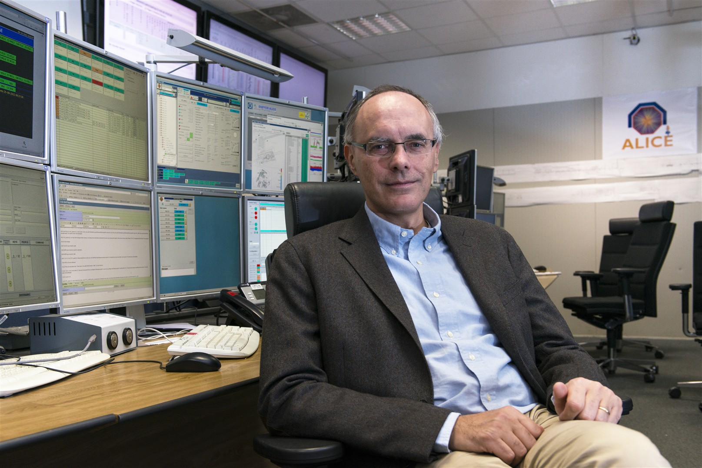
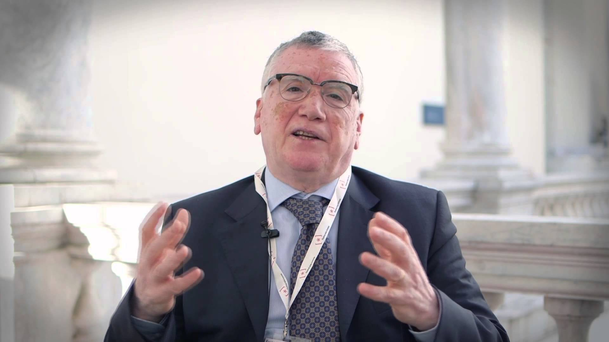
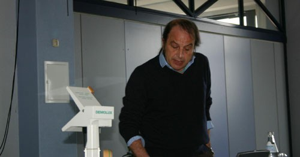
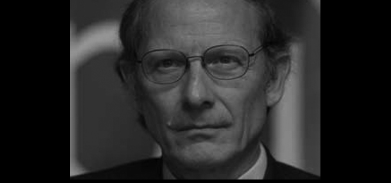
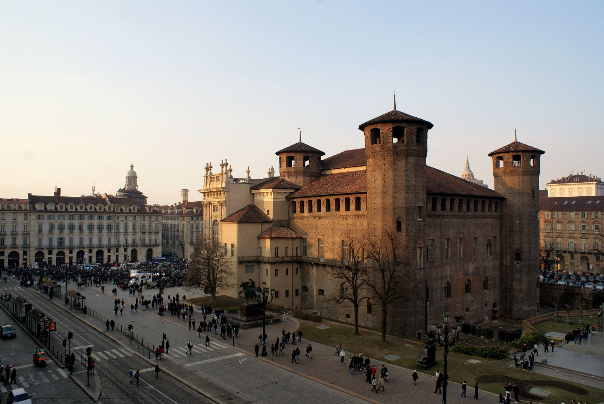

Ospiti
Speakers d'eccezione

Siamo lieti di ospitare professori e accademici di prestigio internazionale. Ecco i loro profili:

Responsabile dell'esperimento ALICE al Large Hadron Collider del CERN
Nato a Torino nel Novembre 1960, ottiene la laurea in fisica presso l’Università di Torino nel 1983. Dopo esperienze di lavoro negli Stati Uniti e in Svizzera, è rientrato in Italia dove lavora dalla metà degli anni 80. E’ attualmente dirigente di ricerca presso la sede di Torino dell’Istituto Nazionale di Fisica Nucleare (INFN). Da molti anni si occupa di esperimenti di fisica nucleare delle altre energie, condotti soprattutto al CERN. E’ stato fra i fondatori dell’esperimento ALICE, nel 1989. Nel marzo 2010 è stato eletto responsabile dell’esperimento, che conta oltre 1000 fisici di 115 istituti di ricerca di 34 nazioni.
Si è dedicato allo sviluppo di tecnologie per la rivelazione di particelle elementari, soprattutto in funzione dei suoi esperimenti in fisica fondamentale ma anche per applicazioni in medicina. Fa parte, dal 2000, dell’Instrumentation Panel dell’ICFA, l’organizzazione che raggruppa a livello mondiale i laboratori di fisica delle Alte Energie. Ricopre numerose cariche di coordinamento e valutazione della ricerca in diversi paesi: presiede il comitato che valuta gli esperimenti presso il GSI in Germania, ed è membro del Comitato Scientifico dell’IN2P3 in Francia, l’organo del CNRS che raggruppa le ricerche in fisica nucleare e subnucleare.
Ha coordinato numerose iniziative di cooperazione internazionale, specie con i paesi dell’America Latina. Nel 2000 ha ricevuto il titolo di Dottore in Fisica e Matematica presso il Dubna Academic Council, Russia. E’ stato insignito nel 2001 del titolo di “Profesor Invitado” dall’Università di La Havana, Cuba, nel 2002 della Medaglia della Accademia delle Scienze dell’Ucraina e nel 2010 della Medaglia della Divisione di Campi e Particelle della Società Messicana di Fisica.
Nel 2014 è stato il primo italiano a vincere il premio Lize Meitner per la fisica nucleare.

presidente dell'Istituto Nazionale di Ricerca Metrologica (INRIM)
Massimo Inguscio, studente della Scuola Normale Superiore, si laurea in Fisica a Pisa nel 1972. Riceve quindi il Diploma di Perfezionamento in Fisica (PhD) presso la Scuola Normale nel 1976. È professore ordinario di Fisica della Materia dal 1986, prima presso l’Università Federico II di Napoli e dal 1991 presso la Facoltà di Scienze MFN dell’Università di Firenze.
Dal dicembre 2012 al 14 gennaio 2014 è stato Direttore del Dipartimento Scienze Fisiche e Tecnologie della Materia del CNR. Dal 15 gennaio 2014 è Presidente dell’Istituto Nazionale di Ricerca Metrologica (INRIM).
Massimo Inguscio è socio dell'Accademia Nazionale dei Lincei, socio non residente dell’Istituto Lombardo (Accademia di Scienze e Lettere) di Milano, socio dell’ Accademia Pontaniana di Napoli, membro della Academia Europaea, nonché fellow della Optical Society of America (OSA), della American Physical Society (APS) e della European Optical Society (EOS).
L’attività di ricerca ha carattere prevalentemente sperimentale, riguarda l’interazione tra luce laser e materia e ottica quantistica. Grande risonanza hanno avuto la prima condensazione di Bose-Einstein (BEC) italiana con atomi di rubidio e l’invenzione, nel 2001, della nuova tecnica di raffreddamento simpatetico di gas atomici utilizzando miscele di rubidio e potassio. Il raffreddamento simpatetico apre scenari sempre più vasti: utilizzando gas di potassio-39 il gruppo di Massimo Inguscio ha creato una BEC ideale, in cui si possono manipolare le collisioni tra gli atomi sino ad azzerarne gli effetti e la ha subito utilizzata per la prima dimostrazione sperimentale diretta della “localizzazione di Anderson”.

Professore ordinario di fisica teorica all'Università di Torino e fondatore di Higgs Cross Section Working Group
Laureatosi in Fisica Teorica presso l’Università degli Studi di Torino con una tesi sulla rinormalizzazione, ha lavorato come ricercatore presso l’Institute for Theoretical Physics in Utrecht sotto la supervisione di Martinus Veltman. È stato visiting scientist all’Università del Michigan e fellow presso SLAC a Stanford.
Attualmente è professore ordinario di Fisica Teorica presso l’Università di Torino, dove tiene i corsi di Teoria dei Campi e Metodi Matematici per la Fisica.
Collabora con la sezione teorica del CERN, è vice-coordinatore della Marie Curie training network “HiggsTools”, comprendente numerosi studenti e ricercatori in tutto il mondo.
La sua ricerca è dedicata allo studio di problemi formali della teoria dei campi, in particolare legati alla rinormalizzazione. È l’inventore, con M.Veltman, della Passarino-Veltman reduction, ormai divenuta tecnica standard nel calcolo di integrali di loop in QFT, ed esposta in un articolo con oltre mille ottocento citazioni. È autore, insieme a Dima Bardin, del libro “The Standard Model in the Making”, testo di riferimento per lo studio della rinormalizzazione del Modello Standard.
Si occupa di aspetti teorici della fenomenologia del bosone di Higgs, di correzioni elettrodeboli ai processi di produzione e allo studio di metodi per la determinazione dell’ampiezza di decadimento. È autore di numerosi reports per LEP e LHC, è fondatore dell’LHC Higgs Cross Section Working Group, che ha diretto per due mandati, e coautore del Handbook of LHC Higgs cross sections.

Presidente dell'ISI Foundation e massimo esperto di scienze della complessità
Laureatosi presso il Politecnico di Torino in Ingegneria Nucleare ed in Matematica, ha ottenuto il Dottorato di Ricerca in Fisica Teorica all’Università di Göteborg (Svezia).
È professore ordinario di Fisica Teorica presso il Politecnico di Torino e direttore della Scuola di Dottorato dell’Ateneo. È membro di numerose organizzazioni scientifiche internazionali, quali l’Insitute of Advanced Studies in Princeton e Center for Non-linear Studies in Los Alamos.
Dal 2007 è presidente della Fondazione ISI (Institute for Scientific Interchange) che conta più di 250 ricercatori internazionali impegnati nello studio dei sistemi complessi.
I suoi più recenti contributi hanno riguardato: la formulazione di una teoria quantistica dei vortici; la soluzione esatta di una vasta classe di modelli di spin (Ising-like) in meccanica statistica; la descrizione teorica della transizione di superconduttività come rottura di una super-simmetria globale; la costruzione teorica di una nuova struttura cristallografica non-euclideo come generalizzazione del grafene e del fullerene; applicazioni dell’algoritmo di Shor in computazione quantistica; la costruzione di stati decoherence-free e il nuovo schema Spin Network Quantum Simulator in computazione quantistica; identificazione di regimi caotici in sistemi dinamici non lineari o topologici; l’applicazione dei sistemi spin-network alle teorie del linguaggio; l’identificazione dell’algebra dinamica della giunzioni Josephson; riformulazione del modello BCS in termini di superalgebre; quantizzazione di sistemi dinamici in spazi non differenziabili e realizzazione dell’algebra di Virasoro a singolo bosone; quantizzazione di solitoni in poliacetilene e studio di effetti quantisitici in life sciences.
Ci saranno delle sessioni dedicate all'esposizione del lavoro degli studenti. Chi fosse interessato può presentare un abstract in fase di registrazione. Dopo la fase di selezione gli interventi scelti verranno raggruppati qui sotto.
